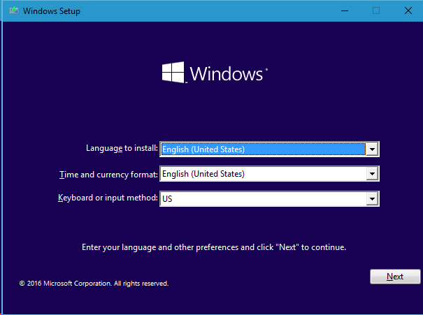
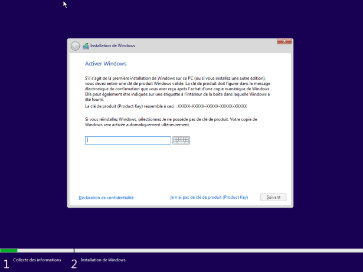
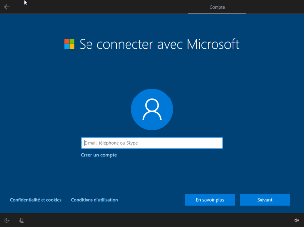

Assuré vous que votre support d'installation Windows 10 est connecter. Pour insatller vôtre
fichier
ISO Windows 10 vous devez insatller sur une clé usb/dique vide qui devra ensuite être connecter
au
PC.
Si vous n'avez pas le fichier, suivez les instructions sur cette page:
https://www.microsoft.com/en-us/software-download/windows10
Après avoir brancher votre support d'installation, allumer le PC. L'écran devrait afficher ceci:

Acceptez le contrat de licence. Sélectionnez le disque sur lequel Windows sera installé (si
vous possédez plusieur disques installez le sur le plus rapide : le système démarrera plus rapidement).

Votre Pc va ensuite redémarrer et vous serez rediriger vers la derniere grosse étape : configurer avant l'installation.

Vous n'avez plus qu'a vous connecter a votre compte Microsoft et a entrer un clé de sécurite (rendu obligatoire sous Windows 10). Finalement après quelque minutes d'attentes et quelques conditions d'utilisation des données à accepter ou refuser vous pourrez accéder à Windows 10.